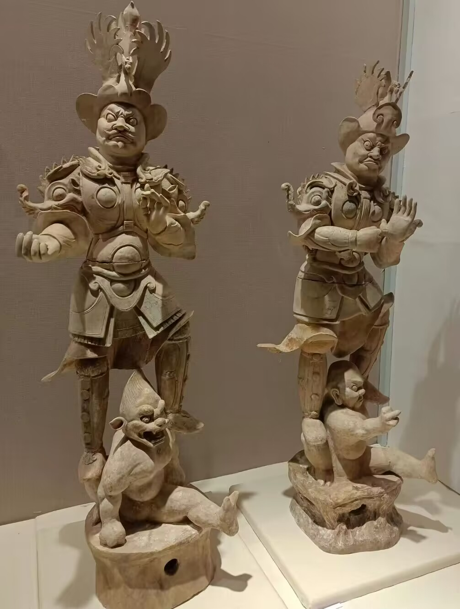
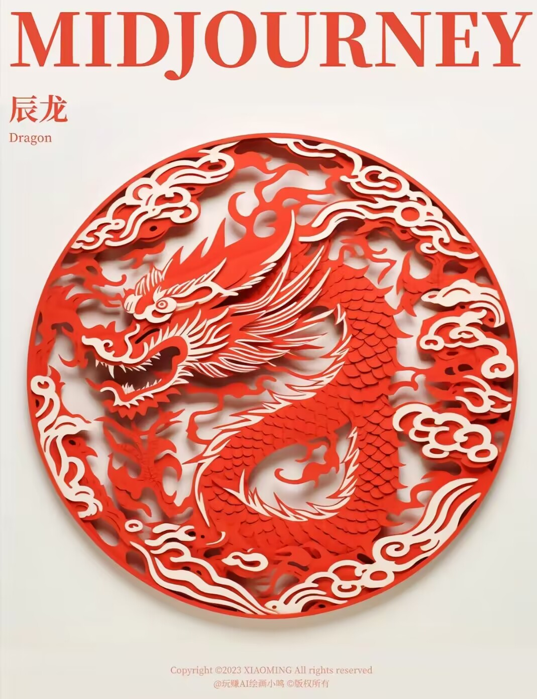
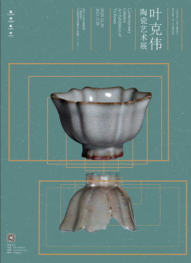

绘画
传统绘画又名国画，是现代人为区别于西洋画而对中国传统绘画的泛称，绘画在传统美术中占大部分。 绘画包括卷轴画、壁画、年画、版画等各种各样的门类。有时特指以中国独有的笔墨等工具材料按照长期形成的传统而创作的绘画。 中国画现分为三大画科：人物画、山水画、花鸟画；有工笔与写意两大种画法；有卷、轴、册、屏等多种装裱形制。
雕刻
雕塑是用可雕刻和塑造的物质材料制作出具有实体形象、以表达思想感情的一种艺术形式。 传统雕塑起源于新石器时代早期，主要有陶雕、木雕、骨雕、象牙雕、玉雕和石雕，技法上采用圆雕、浮雕、铜雕等。 其中，以雕刻为代表，雕刻是指把木材、石头或其他材料切割或雕刻成预期的形状。



工艺美术
工艺美术是指日常生活用品经过艺术化处理以后，使之具有强烈的审美价值的产品，可将工艺美术分为实用工艺美术和陈设欣赏的工 艺美术。 实用工艺美术是整个工艺美术的主体和基础，实用价值是这类工艺品的主要价值，审美价值是作为辅助价值存在的； 陈设欣赏工艺品是指那些以摆设、观赏功能为主的工艺品，这类工艺品以审美为其首要价值，手工技艺性很强。